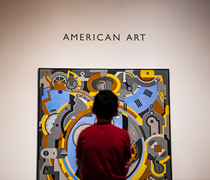

HOME>커뮤니티>자원봉사
자원봉사
서대문자연사박물관에서는 여러분의 자원봉사를 언제든지 환영합니다.
도슨트
박물관에서는 전시설명 자원봉사자인 도슨트를 운영하고 있습니다. 도슨트는 매일 정해진 시간에 박물관 관람객에게 3층 지구환경관에서 시작하여 3층, 2층, 1층의 상설전시장을 약 1시간에 걸쳐 설명합니다.
- 도슨트란?
- 박물관에서 봉사하는 전문인으로서 관람객에게 박물관을 대표하여 전시물에 대한 상세한 설명을 제공하는 사람을 말합니다. 봉사의식이 투철하고 박물관의 전시물에 대한 지식과 지속적인 관심 및 열정을 소유하고 있어야 합니다.
- 도슨트 활동
- 매월 1회(4시간) 이상의 봉사활동을 의무화하고 있습니다.
- 도슨트 활동 시간 : 오전 11시, 오후 2시, 주말 오후 4시
- 도슨트가 되려면
- 추가 모집이 필요할 경우 매년 1월 도슨트를 공개 모집합니다. 서류와 면접을 통해 선발된 지원자는 소정의 교육을 이수한 후 테스트를 걸쳐 도슨트로 활동합니다.
- 도슨트 모집 대상은 다음과 같습니다.
- 대학의 자연사 관련 전공학과 졸업자
- 전문대학 이상의 학력을 갖춘 자 중에서 자연사에 대한 전문지식 또는 열정을 소유한 자
- 전문대학 이상의 학력을 갖춘 자 중에서 자연사에 대한 전문지식 또는 열정을 소유한 자
어린이 도슨트
박물관에서는 어린이 눈높이에 맞는 전시설명을 해주는 어린이 도슨트를 운영하고 있습니다. 초등 고학년(4-6학년)과 중학생으로 이루어진 어린이 도슨트는 각자 자신이 원하는 코너에서 어린이 관람객을 주 대상으로 하여 전시물에 대해 쉽고 재미있게 설명합니다.
- 어린이 도슨트 활동
- 어린이도슨트는 1년(5월~익년4월) 단위로 활동합니다.
- 매월 1회(4시간) 이상 봉사활동을 해야 합니다.
- 활동태도에 따라 자격을 상실할 수 있습니다.
- 어린이 도슨트 혜택
- 활동 기간 중에는 상시 무료입장이 가능합니다.
- 무료로 자연사 관련 교육(6회)을 받습니다.
- 봉사활동확인서 발급이 가능합니다.
- 박물관 홍보물이 무료로 제공됩니다.
- 박물관 행사에 우선 초청됩니다.
- 어린이 도슨트가 되려면
- 어린이도슨트는 매년 1회(2월 중) 모집합니다.
- 모집기간에 지원서를 제출하고 서류와 면접을 통해 선발합니다.
- 자연사와 박물관에 관심이 많고 봉사정신이 강해야 합니다.
- 초등 고학년(4-6학년)과 중학생만 지원이 가능합니다.
- 어린이도슨트 모집 일정 등은 박물관 사정에 따라 변경 가능합니다.